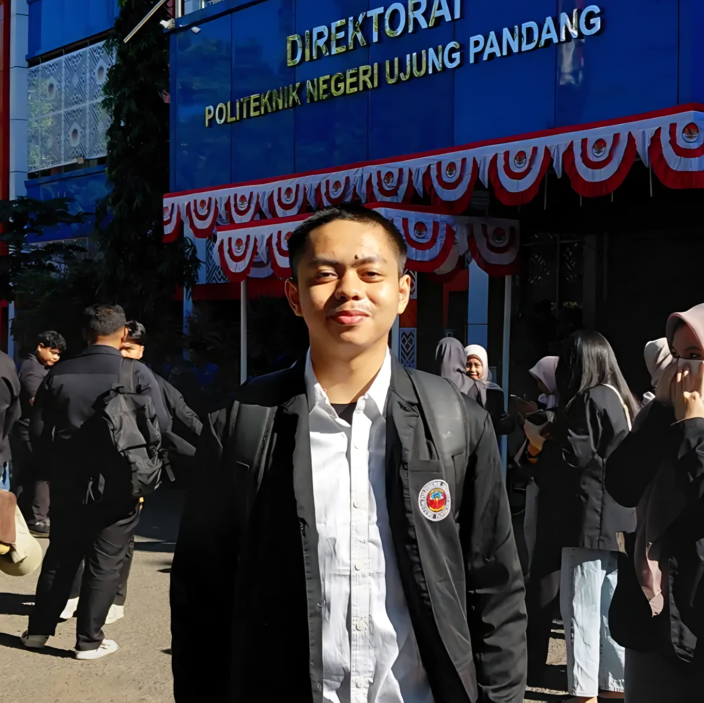

AL Hikmal
Mahasiswa yang membagi perhatian antara kode, desain visual, dan ruang organisasi.
Saat ini menjalani masa kuliah sambil terus mengasah kemampuan di bidang pengembangan web, pemrograman dasar, dan desain grafis — tanpa melepas keaktifan di berbagai organisasi sekolah dan sosial.

Tentang saya
Ketertarikan saya pada teknologi berawal dari rasa penasaran terhadap cara kerja sebuah halaman web, yang lama-kelamaan berkembang menjadi kebiasaan belajar HTML, CSS, dan JavaScript secara mandiri, serta mendalami dasar-dasar C++ pada sesi perkuliahan untuk memahami logika pemrograman. Di sisi lain, saya juga belajar CorelDraw di sesi perkuliahan, mulai dari desain logo, hingga materi pendukung perkuliahan.
Selain kemampuan teknis, saya percaya pengalaman berorganisasi sama pentingnya untuk membentuk cara berpikir dan bekerja sama. Pengalaman sebagai Sekretaris OSIS SMAN 5 Pinrang periode 2024/2025, dan sebelumnya sebagai anggota Bidang 9 Teknologi Informasi dan Komunikasi (TIK) periode 2023/2024, mengajarkan saya cara mengelola administrasi, komunikasi, dan kerja tim. Saya juga aktif sebagai anggota Palang Merah Remaja (PMR) dan Pandu Digital, dua wadah yang memperluas kepedulian saya terhadap kemanusiaan dan literasi digital di lingkungan sekitar.
Keahlian
Kemampuan yang sedang terus saya kembangkan, di ranah pengembangan web, pemrograman dasar, hingga desain grafis.
HTML
Menyusun struktur dan konten halaman web.
CSS
Merancang tampilan, tata letak, dan responsivitas.
JavaScript
Menambahkan interaktivitas dan logika program.
C++
Pemrograman terstruktur dan penyelesaian masalah algoritmik.
CorelDraw
Desain grafis vektor dan tata letak visual.
Adobe Illustrator
Desain grafis vektor lebih profesional.
Pengalaman organisasi
Riwayat keaktifan berorganisasi, dari lingkungan sekolah hingga kegiatan sosial dan literasi digital.
Membantu pengelolaan aspek teknologi dan informasi dalam kegiatan organisasi sekolah.
Berperan dalam kegiatan edukasi dan literasi digital di lingkungan sekitar.
Mengelola administrasi, surat-menyurat, dan dokumentasi kegiatan organisasi.
Turut serta dalam kegiatan kepalangmerahan dan penanaman nilai-nilai kemanusiaan.
Prestasi
Riwayat prestasi akademik dan non-akademik yang semasa SMA saya raih.
Peraih Medali Emas Olimpiade Matematika University.Id
Predikat Medali Emas dalam Olimpiade Matematika Tingkat Nasional Kompetisi Festival Olimpiade Periode Desember Tahun 2025 yang diselenggarakan oleh Lembaga Pendidikan Resmi University ID Education Platform.
Peraih Medali Emas Olimpiade Informatika University.Id
Predikat Medali Emas dalam Olimpiade Informatika Tingkat Nasional Kompetisi Festival Olimpiade Periode Desember Tahun 2025 yang diselenggarakan oleh Lembaga Pendidikan Resmi University ID Education Platform.
Peraih Medali Emas Olimpiade Sosiologi University.Id
Predikat Medali Emas dalam Olimpiade Sosiologi Tingkat Nasional Kompetisi Festival Olimpiade Periode Desember Tahun 2025 yang diselenggarakan oleh Lembaga Pendidikan Resmi University ID Education Platform.
Peraih Medali Emas Olimpiade Matematika Olimnas.Id
Predikat Medali Emas dalam Olimpiade Matematika Tingkat Nasional Olimpiade Nasional Periode Desember Tahun 2025 yang diselenggarakan oleh CV. Alberta Nusa Education.
Peraih Medali Perak Olimpiade Matematika NBSK
Predikat Medali Perak dalam Olimpiade Matematika Tingkat Nasional Nusantara Best Student Competition Tahun 2025 yang diselenggarakan oleh Liga Olimpiade dan Smart Student.
Peraih Medali Perunggu Olimpiade Matematika KPJI
Predikat Medali Perunggu dalam Olimpiade Matematika Tingkat Nasional Kompetisi Pelajar Jenius Indonesia Tahun 2025 yang diselenggarakan oleh Liga Olimpiade.
1 Sekolah 1 Programmer Andalan
Peserta serta meraih lencana Pandu Daksa Pertama SMAN 5 Pinrang, Se-provinsi Sulawesi Selatan, pada 19–20 Juli 2025.
Semi Finalist JHIC
Perwakilan dan Anggota tim Tempekalcer SMAN 5 Pinrang, di Jagoan Hosting Infra Competition, merupakan lomba membuat website sekolah tingkat nasional, pada tahun 2025.
Juara 1 Lomba Jurnalistik
Peraih Juara 1 dalam Lomba Jurnalistik di Jumpa Bhakti Gembira Kab. Pinrang tahun 2024.
Proyek
Format tampilan proyek — sesuaikan judul, deskripsi, dan teknologi yang digunakan dengan proyek yang pernah kamu kerjakan.
Kontak
Ikuti atau hubungi saya lewat tautan berikut: